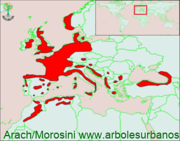

Click en las imágenes para ampliar

{kind=link}
{kind=link}
{kind=link}
{kind=link}
{kind=link}
{kind=link}
{kind=link}
- NOMBRE CIENTÍFICO
- Ilex aquifolium
- FAMILIA BOTÁNICA
- Aquifoliáceas
- ORIGEN
- Tiene una gran área de distribución natural, abarcando el norte de África y en Europa desde Península Ibérica, Escandinavia, las Islas Británicas, hasta el Caúcaso, Asia menor hasta Irán.
- DESCRIPCIÓN GENERAL
- Es un árbol de tamaño pequeño o mediano, llegando a veces a 15 metros de altura. Posee una copa en principio cónica, luego anchamente columnar, Su corteza juvenil es lisa y de color verde, cuando es adulta sigue siendo lisa y pasa a tener un color gris oscuro. Es una especie considerada de lento crecimiento, en su lugar de origen. Sus hojas son simples, alternas de hasta 10 cm. de largo y hasta 5 cm. de ancho, de color verde brillante en la cara superior y verde claro mate en la inferior, con borde irregularmente dentado, son duras y espinosas las juveniles, en las ramas superiores pueden carecer de este espinoso borde. Persisten en el árbol todo el año, cada una de ellas dura aproximadamente 5 años.
- FLORES
- es un árbol dioico, as flores masculinas son amarillentas, las femeninas blanquecinas, a veces blanco rosadas, crecen en las axilas de las hojas.
- FRUTOS
- El fruto es una drupa de color rojo de un cm de diámetro, contiene en su interior 4 semillas, cabe aclarar que es tóxico y por esto no debe ser consumido, teniendo especial cuidado con los niños, ya que su aspecto es muy atractivo.
- USOS
- El mayor uso que tiene esta especie es ornamental, en los lugars donde crece espontáneamente su madera dura y compacta se la utiliza para realizar piezas de pequeño tamaño ya que no se encuentran ejemplares grandes y en otros lugares como España en ciertas zonas es una especie protegida.
- REPRODUCCIÓN
- Se lo puede multiplicar tanto por semillas, como por estacas, estas deben estar parcialmente lignificadas (o sea no pueden ser brotes tiernos, ni tampoco tallos muy maduros). Las variedades se propagan por injerto.
- PARTICULARIDADES
- comúnmente se lo conoce como muérdago, pero en realidad el muérdago verdadero es una planta parásita que crece sobre otros árboles. Este árbol pertenece al mismo género botánico que la Yerba mate que se denomina (Ilex paraguariensis) Existen muchas variedades que varían fundamentalmente el color de las hojas, muchas son verdes con el margen blanco o amarillo, también varía el color de los frutos de rojo a blanco y amarillo.
Acebo común, falso muérdago